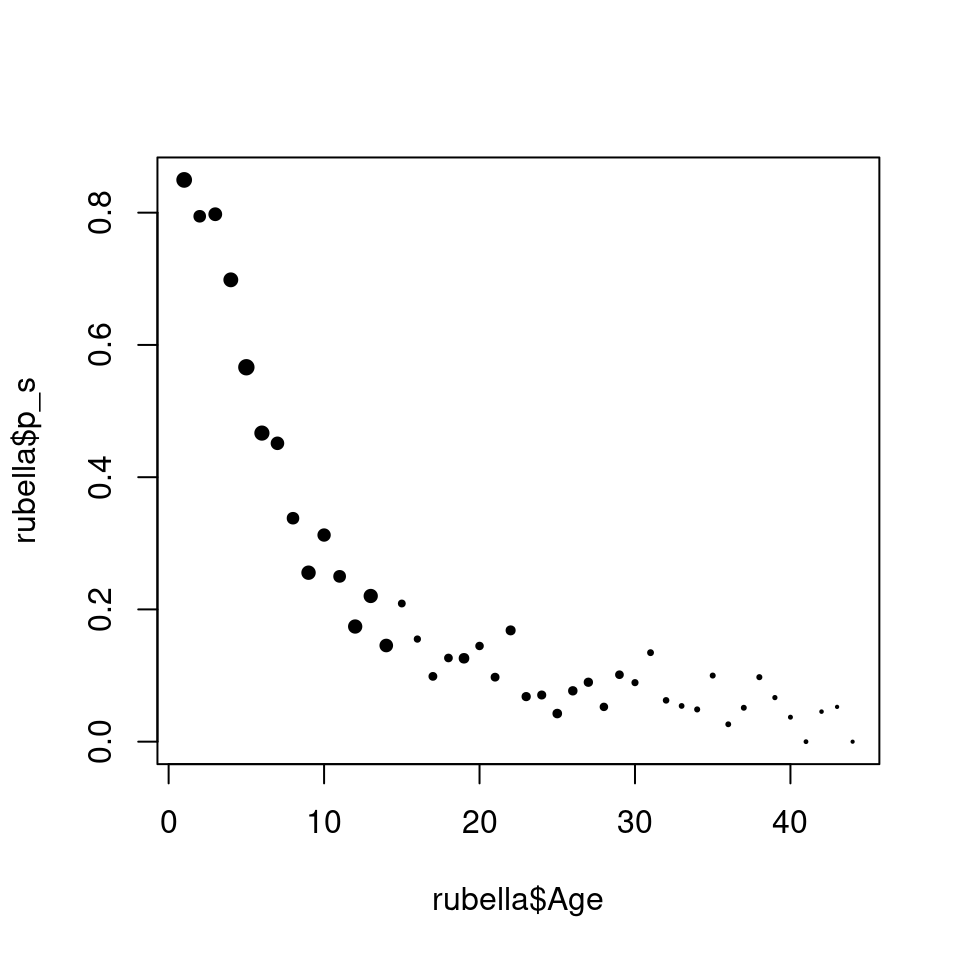
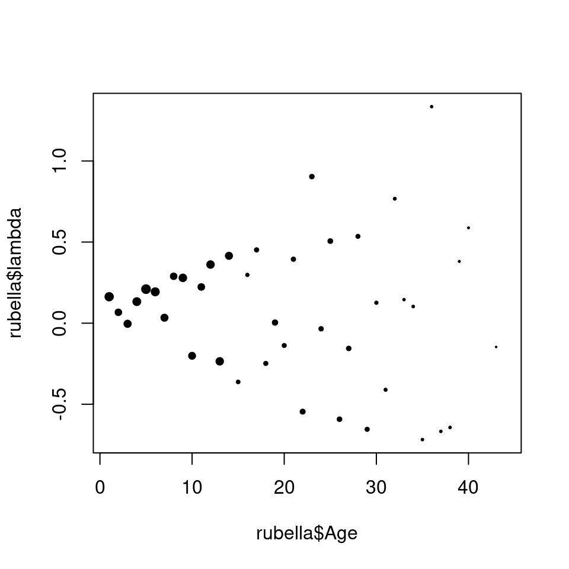
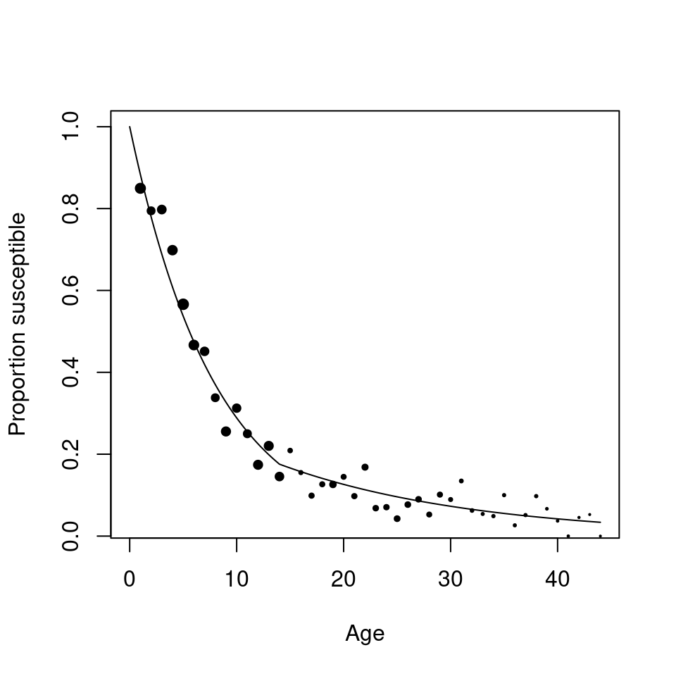
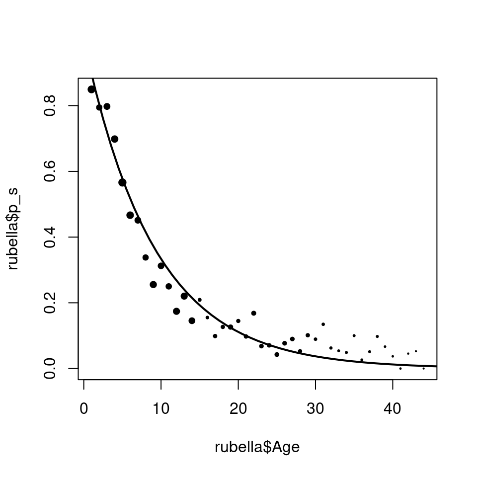

11 Estimating \(R_0\) using catalytic models
T. J. McKinley (t.mckinley@exeter.ac.uk) and Andrew Conlan (ajkc2@cam.ac.uk)
The aim of this practical is to estimate the age-stratified force-of-infection and basic reproductive ratio from age-stratified serological data for an endemic disease.
Objectives:
- Estimate the age-stratified force-of-infection of rubella from serological data.
- Calculate the next generation matrix and \(R_0\) for rubella.
We approach these two objectives using two alternative methods:
- In Section 11.1 we take the traditional two stage approach of estimating the force-of-infection first and then calculating the next generation matrix from an assumed Who-Aquires-Infection-from-Whom (WAIFW) matrix.
- In Section 11.2, we take the more elegant approach of estimating the next generation matrix directly using social contact (POLYMOD) data.
11.1 Estimating the force-of-infection and \(R_0\) of rubella
In this practical we will estimate the force-of-infection of rubella using serological survey data from the UK provided in the book “Modelling Infectious Disease Parameters Based on Serological and Social Contact Data” by Hens et al. (2012)
You will need a copy of the data (Rubella-UK.csv), which you can download via the link. We will begin by loading and checking the contents of the rubella data table:
## Age Pos Neg
## 1 1 31 175
## 2 2 30 116
## 3 3 34 134
## 4 4 57 132
## 5 5 95 124
## 6 6 104 91rubella should be a table with 44 rows and 3 columns. rubella$Age is the endpoint of the age group (annual) from which rubella$Pos + rubella$Neg samples were taken, of which rubella$Pos were positive for rubella antibodies and rubella$Neg were negative.
The force-of-infection (\(\lambda\)) is defined as the rate that susceptible individuals acquire infection per unit time. Cross-sectional surveys provide no explicit information on how the risk-of-infection varies with time (which will depend on the epidemic dynamics), but can be used to quantify how the risk of infection depends on covariates such as age. If we assume that the individuals within an age-group experience a constant average force-of-infection then the rate of change of the proportion susceptible with age will be: \[\begin{equation} \frac{dp}{da} = -\lambda p_0 \end{equation}\] with solution: \[\begin{equation} p(a) = p_0 e^{-\lambda a} \end{equation}\] where \(p_0\) is the proportion susceptible at the beginning of the age group.
The proportion susceptible at the end of an age group, \(p_1\), will then be given by: \[\begin{equation} p_1 = p_0e^{-\lambda \Delta a} \tag{11.1} \end{equation}\] where \(\Delta a\) is the width of the age group.
Take logs of both sides of (11.1) and solve for \(\lambda\) to get a first estimator for the force of the infection in a discrete age group as a function of the proportion susceptible at the beginning and end of the age group.
Use the equation derived above to estimate the force-of-infection \(\lambda\) within each annual age cohort (\(i = 1, \dots, N_A\)) and add as another column to the rubella data frame (e.g. rubella$lambda).
To check your calculations and visualise the data generate the following plots:
## size is a vector to scale the size of points according to the
## sample size within that age group
size <- (rubella$Pos + rubella$Neg) / max(rubella$Pos + rubella$Neg)
## now produce plots
plot(rubella$Age, rubella$p_s, pch = 19, cex = size^0.75)
plot(rubella$Age, rubella$lambda, pch = 19, cex = size^0.75)
Figure 11.1: Proportion susceptible with respect to age

Figure 11.2: First estimate of force-of-infection of rubella
Dynamic age-structured epidemic models typically assume that the force-of-infection is constant within coarse age-groups, but can differ between age-groups. For such a coarse-grained models (with age groups of width \(a\), indexed by \(i\) as before) we can calculate the piecewise probability of remaining susceptible as introduced in lectures: \[\begin{equation} P_s(a) = \left\{\begin{array}{ll} e^{-\lambda_1 a} & \mbox{for}~a_0 < a < a_1\\ P_s\left(a_i\right) e^{-\lambda_{i + 1} \left(a - a_i\right)} & \mbox{for}~a_i < a < a_{i + 1}, \end{array}\right. \tag{11.2} \end{equation}\] where \(\lambda_i\) is the age-specific force-of-infection in group \(i\).
The function piecewise_s(a, foi) provided below returns this age-stratified probability of being susceptible at the end of each discrete age groups, specified by the vector of ages a for a given vector of force-of-infections (lambda).
## Calculate proportion of population that remains susceptible
## by age a for population with force of infection (foi)
##
## Arguments:
## a: vector of ages to calculate susceptible proportion
## lambda: vector of length equal to the maximum assumed age in the population
## with a specified force of infection for each annual cohort.
piecewise_s <- function(a, lambda) {
## extract information on age-classes
max_age <- length(lambda)
breaks <- 0:max_age
widths <- rep(1, max_age)
## set up output vector
s <- numeric(length(a))
## loop over age-classes
for(i in 1:length(a)) {
if(a[i] == 0) {
s[i] <- 1
} else {
## which age class does current value of a lie within
age_class <- max(which(a[i] > breaks))
sg <- 1
if(age_class > 1) {
## iterate over previous age groups calculate susceptibles
## at beginning of age group
for(j in 1:(age_class - 1)) {
sg <- sg * exp(-lambda[j] * widths[j])
}
}
## calculate susceptible proportion at age a within final
## age group
s[i] <- sg * exp(-lambda[age_class] * (a[i] - breaks[age_class]))
}
}
## return vector of probabilities
return(s)
}The function FOI_loglik(x, foi_key, sero_data) defined below uses piecewise_s() to calculate the (binomial) likelihood of observing a given number of positive/negative samples for each age-group given in the table sero_data, for a piecewise continuous force-of-infection defined by vectors x and foi_key.
As individuals can only take two possible values, positive or negative, the likelihood of a given force-of-infection (FOI) can be written in terms of a binomial trial depending on the number of positive samples in each group (\(X_a\)), number of samples (\(N_a\)) and the predicted probability of infection within that age group (\(p_a(K)\)). Hence the log-likelihood can be written as: \[\begin{equation} l(K) = \sum_{a} \log{N_a \choose X_a} + X_a\log\left[p_a(K)\right] + \left({N_a - X_a}\right)\log\left(1 - p_a(K)\right). \end{equation}\]
We can code this in R using the following function:
## Calculate (Binomial) likelihood of observing given number of
## positive/negative samples (provided in table sero_data) for each
## age group and specified by a piecewise continuous force of
## infection model defined by foi_key
##
## Arguments:
## x: vector of unique force-of-infection values
## foi_key: pattern vector of length equal to the maximum assumed age
## in population (or data set) that specifies which unique value of x
## corresponds to each annual cohort in population.
## sero_data: data frame with columns
## sero_data$Pos: positive samples
## sero_data$Neg: negative samples
FOI_loglik <- function(x, foi_key, sero_data) {
## set up age classes
breaks <- 0:length(foi_key)
if(any(x <= 0)) {
## if any proposed lambdas are negative, then
## return zero likelihood (so log-likelihood = -Inf)
return(-Inf)
} else {
## extract relevant FOI for each age-cohort
lambda <- x[foi_key]
## calculate log-likelihood
loglik <- 0
for(i in 1:nrow(sero_data)) {
## which age class does observation lie in
age_class <- max(which(sero_data$Age[i] > breaks))
## calculate proportion of susceptibles at given age class
sg <- piecewise_s(breaks[age_class], lambda)
## log-likelihood contribution
loglik <- loglik + dbinom(
sero_data$Pos[i],
sero_data$Pos[i] + sero_data$Neg[i],
prob = 1 - sg * exp(-lambda[i] * (sero_data$Age[i] - breaks[age_class])),
log = TRUE
)
}
## return log-likelihood
return(loglik)
}
}We will assume there are two mixing groups and two unique forces-of-infection, one corresponding to children \(<15\) years and one for adults 15–45. We wish to estimate two parameters, \(\lambda_1\) and \(\lambda_2\), and we specify which parameter corresponds to which age cohort using a vector two_groups defined as:
## [1] 1 1 1 1 1 1 1 1 1 1 1 1 1 1 2 2 2 2 2 2 2 2 2 2 2 2 2 2 2 2 2 2 2 2 2 2 2 2
## [39] 2 2 2 2 2 2We can obtain the maximum-likelihood estimate for this model by optimising the value of FOI_loglik() using the built-in function optim().
## calculate MLE
twogroup_mle <- optim(
c(0.07, 0.07), ## set initial values for lambda1 and lambda2
FOI_loglik, ## log-likelihood function
foi_key = two_groups, ## foi_key
sero_data = rubella, ## data
control = list(fnscale = -1) ## maximise (rather than minimise) function
)
twogroup_mle## $par
## [1] 0.12423142 0.05500056
##
## $value
## [1] -110.846
##
## $counts
## function gradient
## 83 NA
##
## $convergence
## [1] 0
##
## $message
## NULLThe convergence = 0 part suggests that the optimisation has converged (in practcie one might want to run optim() multiple times from different initial conditions to check that it’s not converged to a local mode). We can check the fit of the model by plotting the predicted values against the data:
ages <- seq(0, 44, by = 0.1)
plot(
ages,
piecewise_s(ages, twogroup_mle$par[two_groups]),
type = 'l',
xlab = "Age",
ylab = "Proportion susceptible"
)
points(rubella$Age, rubella$p_s, pch = 19, cex = size^0.75)
Figure 11.3: Predicted susceptible profile of two-group FOI model against data
11.1.1 Bayesian estimation
We can also estimate the posterior distributions for the two force-of-infections within a Bayesian framework using MCMC. Here we introduce and use one of the standard MCMC libraries in R (MCMCpack) that implements a generic MCMC method.
## load library
library(MCMCpack)
## fit model
twogroup_post <- MCMCmetrop1R(
FOI_loglik, ## log-likelihood
theta.init = twogroup_mle$par, ## initial values
mcmc = 10000, ## number of iterations
burnin = 500, ## burn-in
tune = 1, ## proposal parameter
verbose = 500, ## print progress every 500 it
logfun = TRUE, ## return log-density
foi_key = two_groups, ## foi key
sero_data = rubella ## data
)Check the convergence of the MCMC and comment on the weight of evidence that the force-of-infection for rubella is different in the two age groups.
11.2 Next-generation matrix approaches
If the force-of-infection was independent of age we could estimate \(R_0\) straightforwardly as the ratio of the force-of-infection and life expectancy. However, when the force-of-infection varies with age we need to first use the force-of-infection to calculate the transmission parameters within and between each age-group. Here we work through through the traditional method for achieving this where social contact data is not available and assumptions must be made about Who Acquires Infection from Whom (WAIFW).
We can derive an equation that links the force-of-infection and the elements of the next generation matrix \(k_{ij}\). (The details of the derivation are a little messy and will be omitted here, see Anderson and May (1991); Hens et al. (2012) for details.)
\[\begin{equation} \begin{pmatrix} \beta_{11} & \beta_{12}\\ \beta_{21} & \beta_{22} \end{pmatrix} \begin{pmatrix} \psi_1 \\ \psi_2 \end{pmatrix} = \begin{pmatrix} \lambda_1 \\ \lambda_2 \end{pmatrix} \tag{11.4} \end{equation}\]
\(\mathbf{\psi}\) is a function derived from the force-of-infection that, loosely, corresponds to the average proportion of individuals infectious within each age group at any time. The function Psi(lambda, age_widths, TI, u) defined below returns the vector \(\mathbf{\psi}\) for a specified force-of-infection lambda, for coarse age groups of widths age_widths, and infectious period of length TI, and the mortality rate for each age group u.
Psi <- function(lambda, age_widths, u, TI) {
## set up auxiliary vectors
psi <- numeric(length(lambda))
Psi <- numeric(length(lambda))
## calculate elements of psi-vector
psi <- lambda * age_widths
psi <- cumsum(psi)
Psi[1] <- 1 - exp(-psi[1])
for(a in 2:length(lambda)) {
Psi[a] <- exp(-psi[a - 1]) - exp(-psi[a])
}
## return psi-vector
return((u / (1 / TI)) * Psi)
}Equation (11.4) defines two simultaneous equations for two known values: \(\left(\lambda_1, \lambda_2\right)\).
We can only proceed to solve these equations by restricting the values of \(k_{ij}\) to the number of estimated forces-of-infection. Different assumptions about the structure of this matrix correspond to very different estimates of \(R_0\). Greenhalgh and Dietz (1994) demonstrated that the feasible lower bound on \(R_0\) for these data corresponds to the situation where infants are responsible for all transmission within the population: \[\begin{equation} \mbox{infant} = \begin{pmatrix} k_1 & 0\\ k_2 & 0 \end{pmatrix}. \end{equation}\] The upper bound corresponds to the diagonal matrix where mixing occurs purely within your own age group: \[\begin{equation} \mbox{diagonal} = \begin{pmatrix} k_1 & 0\\ 0 & k_2 \end{pmatrix}. \end{equation}\]
Use your new expressions to calculate the values of \(k\) for the infant mixing and assortative mixing assumptions, and the corresponding lower and upper bounds for \(R_0\). Use the maximum likelihood estimates of \(\lambda_1\) and \(\lambda_2\). Assume that the mortality rate \(u = 20 / 1000\) and that \(T_I = 5 / 365\). Assume the total population size is \(n = 1\).
Calculate the posterior distributions for \(R_0\) for the two-group model under the same conditions as the previous task. Plot the posterior densities.
11.3 Estimating the next generation matrix from rubella serology
For human infectious diseases at least, the POLYMOD social contact data has revolutionised how we interpret serological data. In this section we estimate the next generation matrix for rubella using the POLYMOD mixing data. We also introduce a more modern, and convenient, method where we directly estimate the next generation matrix from age-stratified serological data.
For a given next generation matrix K we can calculate the resulting force-of-infection using: \[\begin{equation} \lambda_i = \sum_{j} k_{ij}\left[P_s\left(a_{i + 1}\right) - P_s\left(a_i\right)\right] \tag{11.5} \end{equation}\] Although we cannot write down a closed form solution for \(K_{ij}\), for any given next generation matrix \(\mathbf{K}\), we can iteratively solve equations (11.2) and (11.5) to obtain the susceptibility curve \(P_s(a)\) and force-of-infection \(\lambda_i\) that correspond to particular values of \(\mathbf{K}\). By exploring different values (and forms) of \(\mathbf{K}\) we can then estimate what next generation matrix is most consistent with a given susceptibility curve.
This procedure is straightforward, but a bit fiddly, so once again we have provided you with helper functions below to do this, adapted from the book by Hens et al. (2012).
NextGen_foi(K) returns the age-stratified force-of-infection corresponding to a specified next generation matrix K (Equation (11.5) above). The number of age groups is taken from the dimensions (number of rows/columns) of K.
NextGen_loglik(x, matrixfunction, sero_data) is analogous to FOI_loglik() and returns the likelihood of observing a given number of positive/negative samples for each age-group and a specified next generation matrix with parameters x and structure defined by a user specified function matrixfunction().
Note that instead of estimating the scaling parameter \(y = e^x\) directly, we estimate \(x = e^y\). This parameter transformation doesn’t change our basic assumption that transmission is directly proportional to the reported POLYMOD contacts, but improves the numerical accuracy of our estimation. Such tricks often improve the convergence of numerical procedures, especially MCMC methods, but the appropriate choice can be somewhat of a black art.
By writing NextGen_loglik() to depend on a function as well as a set of parameters we can easily fit alternative models that assume different patterns of mixing in the population. For example we can specify a homogeneous mixing model by the following function:
## function that returns a homogeneous mixing next
## generation matrix with all elements equal to x
HomogeneousMatrix <- function(x) {
mat <- matrix(x, 86, 86)
return(mat)
}where we assume there are 86 age cohorts in the population (for consistency with POLYMOD matrix).
The helper functions are defined below:
## calculate force of infection for a given next generation matrix K
##
## annual age cohorts are assumed with maximum assumed age given by
## dimensions of K
##
## Arguments:
## K - Next Generation Matrix
NextGen_foi <- function(K) {
## set up age-class widths
widths <- rep(1, nrow(K))
## number of age classes
num_class <- nrow(K)
## piecewise FOI by age-class
lambda <- numeric(num_class)
## susceptible fraction at END of age class
s <- rev(sort(runif(num_class)))
oldlambda <- lambda
tolerance <- 1
iterations <- 1
while ((tolerance > 1e-10) & (iterations < 2000)) {
oldlambda <- lambda
for(i in 1:num_class) {
lambda[i] <- (K[i, 1] * (1 - s[1]) +
sum(K[i, 2:num_class] *
(s[1:(num_class - 1)] - s[2:num_class])))
}
s[1] <- exp(-lambda[1] * widths[1])
for(i in 2:(num_class)) {
s[i] <- s[i - 1] * exp(-lambda[i] * widths[i])
}
tolerance <- sum((lambda - oldlambda)^2)
iterations <- iterations + 1
}
return(lambda)
}## calculate (Binomial) likelihood of observing given number of
## positive/negative samples
## (provided in table sero_data) for each age group and specified
## next generation matrix K = matrixfunction(x)
##
## Arguments:
## x: vector of unique force of infection values
## foi_key: pattern vector of length equal to the maximum assumed age
## in population (or data set) that specifies which unique value of
## x corresponds to each annual cohort in population.
## sero_data: data frame with columns
## sero_data$Pos: positive samples
## sero_data$Neg: negative samples
NextGen_loglik <- function(x, matrixfunction, sero_data) {
## set up auxiiary vectors
x <- exp(x)
K <- matrixfunction(x)
breaks <- 0:nrow(K)
widths <- rep(1, nrow(K))
if(any(x <= 0)) {
## if any rates < 0 then
## return log-likelihood = -Inf
return(-Inf)
} else {
## calculate fois
lambda <- NextGen_foi(K)
## calculate log-likelihoods
loglik <- 0.0
for(i in 1:nrow(sero_data)) {
## which age class does observation lie in
age_class <- max(which(sero_data$Age[i] > breaks))
## proportion of susceptibles at beginning of age class
sg <- piecewise_s(breaks[age_class], lambda)
loglik <- loglik + dbinom(
sero_data$Pos[i],
sero_data$Pos[i] + sero_data$Neg[i],
prob = 1 - sg * exp(-lambda[age_class] *
(sero_data$Age[i] - breaks[age_class])),
log = TRUE
)
}
## return log-likelihood
return(loglik)
}
}We can now obtain the maximum-likelihood estimate for the homogeneous mixing matrix by optimising the value of NextGen_loglik():
homogeneous_mle <- optimise(
NextGen_loglik, ## function to optimise
log(c(0.01, 1)), ## upper and lower bound
matrixfunction = HomogeneousMatrix, ## pass matrixfunction to NextGen_loglik
sero_data = rubella, ## pass sero_data to NextGen_loglik
maximum = TRUE ## maximise the function
)
homogeneous_mle## $maximum
## [1] -2.209086
##
## $objective
## [1] -135.6114Then to calculate the force-of-infection corresponding to our maximum likelihood fit:
You can check the fit of the model by using the piecewise_s() function to predict the proportion positive for each age group and plot against the original data:
plot(rubella$Age, rubella$p_s, pch = 19, cex = size^0.75)
lines(
seq(0.5, 75, 1),
piecewise_s(
seq(0.5, 75, 1),
homogeneous_foi
),
lwd = 2
)
The overall fit is actually pretty good. However if we look closely the model does systematically overestimate the proportion infected in 10–20 year olds and underestimates in the 20–44 age groups, as we would expect from our analysis in the earlier section.
We could generalise our mixing matrix to include additional parameters to describe this heterogeneity as before. Or we can test whether social contact patterns provide a better description of the observed force-of-infection. Here we assume that infectious contacts are distributed proportionally to a POLYMOD mixing matrix.
Copy the provided POLYMOD data from the shared folder to your working directory and load into R:
## load (smoothed symmetrical) POLYMOD matrix
POLYMOD <- as.matrix(read.csv("POLYMOD.csv", header = FALSE))Now we write a function called POLYMODMatrix() that takes a single parameter x and returns a scaled version of the POLYMOD matrix (\(M_{ij}\)):
## generates a scaled POLYMODMatrix with transmission
## parameter defined by x
POLYMODMatrix <- function(x) {
return(x * POLYMOD)
}Finally, calculate the value of \(R_0\) for the two mixing assumptions:
## [1] 9.442879## [1] 7.776891